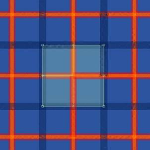

Patternshop lets you create, quickly and intuitively, tartan style networks, glen plaid, etc.
All you need to do is to first properly prepare the images to be used. Get inspiration from those in this tutorial to create your own.
The images used:
To simulate fabric we use bands of different heights but the same width (here 500 pixels) :

Open a new document (Ctrl + N)
A dialog box will ask you to enter the width and height of your document and its resolution.
Enter "A4" into the predefined formats.
Import the RedBand image available in the image bank (Ctrl + D)

It is important to rescale the pattern so that it is the same width as the image.
To do this, cut and paste the value Width (W) from the dimension field of the image tab to the Dimension field of the Pattern tab of the Transformation Window.

The pattern is now exactly the size of the image:

Splitting the pattern lets you precisely mount your network.
Activate the splitting of the pattern and enter in the dW and dH fields the values 2 and 2:


Select the image and duplicate it: (Ctrl + R)
Rotate the new image 90°.
Note: Snap intersections by keeping Shift pressed when you move the image.
Import other images and duplicate them to mount your network:
After importing the YellowBand image:
After importing the MarineBand image:
At this stage you can change the background colour:

After importing the WhiteBand image:
The WhiteBand image is repeated twice in width and twice in height.
Note that you can play with the order of tracing patterns to move one colour in front of the other, etc.
Swivel your network 45° by pivoting the pattern with the Ctrl and Shift keys pressed.
(Ctrl links images to the pattern, Shift lets you rotate the pattern by 22.5° increments)

Copyright 2009 - Patternshop